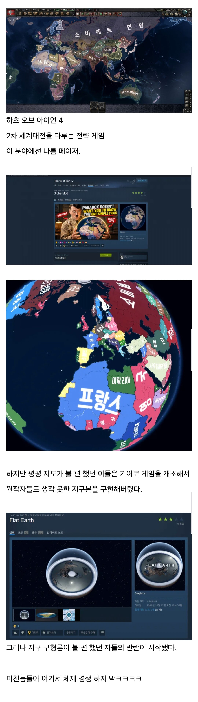

평평론자가 또!

평평론자가 또!
슈퍼파워2 느낌나네
플랫어스가 아니라
리얼어스라 해야지
평평이 모드도 나름 신박할듯 ㅋㅋㅋㅋㅋㅋ
이쯤되면 평평한 지구 하나쯤 만들어서 평평지구 지지하는 애들은 그쪽으로 이주 시켜줘야하는거 아닌가 싶다
이런게임들은 메토카르트 도법으로 지도 많이 그리더라
뭐라는거야
캠릿브지 대학
아니 ㅋㅋㅋㅋㅋㅋ
호이! 호이! 둘리는~ 초능력 내친구~


와 프랑스랑 포르투갈? 엉덩이 같아서 개꼴리네
이란 사우디는 허리고
소비에트는 상체
합중국은 머리로
등돌린 나체의 여인이 얼굴만 이쪽을 바라보는거같음
가짜 광기
진짜를 보여줘
이제 평평한 지구 아래 거대 우주 거북이 등 위에 올려져있는 모드 나와야
핑핑론자

저때의 중국이 참으로 마음에 드는구나
게임이 자꾸 제약이 늘어나고 국가개편이랍시고 DLC만 줄창 만드는데 언제까지 똥내나는게임 붙잡고 만들껀지..
엔진 개선해서 멀티코어나 재대로지원하게 하거나 후속작이나 좀 쳐만들지
지구는 네모다
요즘 젊은사람들은 다 호이4한다. 카라구동기라는 나쁜말 ㄴㄴ해
TNO구동기는요?
그거는 너무 경제가 짜증나서 안하고 요즘은 TFR함
하트 오브 아이언4를 아십니까?
정말 갓겜입니다.
아니 지구는개쩌는파괴광선거북단은 어디서 뭐하냐
호이 해보면 느끼는 점 미국 방장 사기맵 졸라 체감됨
문명만 해봐도 아메리카에서 스타트하면 질수가 없음 걍 온갖 자원이 다나옴
호이뽀~
플랫어스 시밬ㅋㅋ 난 근데 평평한게 맘에듬 소비에트 연방 존나 폭력적으로 커서